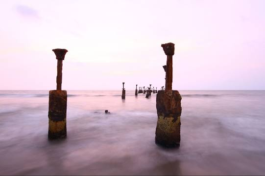
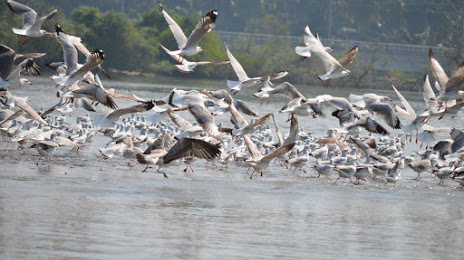
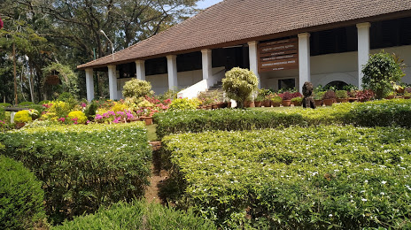
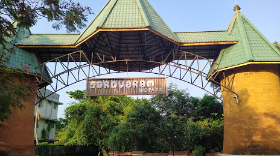

Kozhikode:"A colonial city of trade and tourism"
Formerly known as Calicut, Kozhikode is located in Kerala. It was the Capital of Malabar during the Zamorin rule 500 years ago and is famous for its centuries-old trade in cotton and spices with Jews, Arabs, Phoenicians and Chinese. Basking in the idyllic setting of the serene Arabian Sea on the west and the proud peaks of the Wayanad hills on the east, this district with the serene beaches, lush green countryside, historic sites, all combine to make Kozhikode a popular tourist destination.
Vasco da Gama had set his foot on the remote beach of Kappad in Kozhikode in 1498 and 'Discovered India' and established spice trade routes with the west. Kozhikode city is the marketing centre for commodities like pepper coconut, coffee, rubber, lemongrass oil etc., produced in Kozhikode and the neighbouring districts of Wayanad, Malappuram and Kannur. Being the major trade centre in Malabar and major exporter to foreign countries, the international travellers christened this district as ‘the noble emporium of India’.

Top Destinations
Kozhikode Beach
Kadalundi Bird Sanctuary
Pazhassiraja Archaeological
Sarovaram Bio Park
Formerly known as Calicut, Kozhikode is located in Kerala. It was the Capital of Malabar during the Zamorin rule 500 years ago and is famous for its centuries-old trade in cotton and spices with Jews, Arabs, Phoenicians and Chinese. Basking in the idyllic setting of the serene Arabian Sea on the west and the proud peaks of the Wayanad hills on the east, this district with the serene beaches, lush green countryside, historic sites, all combine to make Kozhikode a popular tourist destination. Vasco da Gama had set his foot on the remote beach of Kappad in Kozhikode in 1498 and 'Discovered India' and established spice trade routes with the west. Kozhikode city is the marketing centre for commodities like pepper coconut, coffee, rubber, lemongrass oil etc., produced in Kozhikode and the neighbouring districts of Wayanad, Malappuram and Kannur. Being the major trade centre in Malabar and major exporter to foreign countries, the international travellers christened this district as ‘the noble emporium of India’.